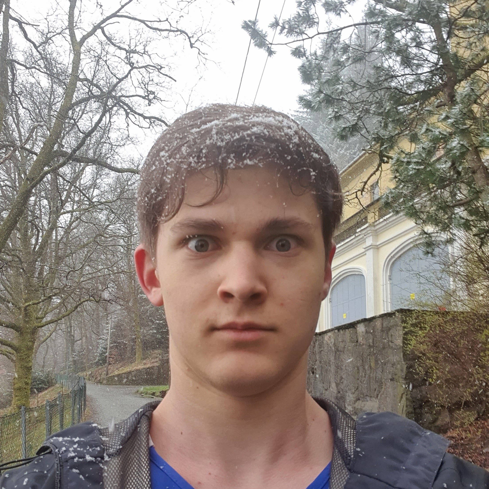

Andreas
Andreas ble født 28. august 2004, i en liten kystby på Vestlandet. Barndommen hans var preget av eventyrlyst og en umettelig nysgjerrighet. Foreldrene hans, begge biologer, tok ham ofte med på forskingsekspedisjoner, og Andreas tilbrakte utallige timer i naturen, hvor han utforsket skoger, fjorder og fjell. Fra tidlig alder lærte han om dyreliv og økosystemer, men også om hvordan man alltid skulle stille spørsmål – både til seg selv og verden rundt. Som barn var Andreas rastløs. Han fant aldri helt ro i klasserommet, hvor ting føltes for langsomme og uinteressante. Han ville heller lære gjennom erfaringer, og tilbrakte mesteparten av fritiden sin med å klatre i fjell, fiske, og utforske de dype skogene som omringet byen hans. Det var ikke uvanlig at han forsvant i timevis, og ofte måtte foreldrene sende ut letelag for å finne ham. Da han var 15, forandret livet seg drastisk. Foreldrene hans fikk et oppdrag i Amazonas for et år, og Andreas ble sendt til en internatskole i Storbritannia. Han hatet tanken, men til sin overraskelse fant han noe spesielt der. Skolen var like ved en gammel skog, og det var her Andreas’ livs store eventyr begynte. En dag, mens han vandret gjennom skogen, snublet han over en gammel stein med innskrifter. Den virket utenlandsk, nesten utenomjordisk, og ingen andre på skolen kunne forklare hva det var. Andreas ble fascinert, og begynte å grave dypere i historien. Han fant ut at skogen en gang hadde vært bebodd av en eldgammel stamme, men at de plutselig forsvant for flere hundre år siden. De få sporene som var igjen etter dem, var innskrevet på mystiske steiner som den han hadde funnet. I løpet av de neste årene ble Andreas’ liv en jakt på sannheten om disse forsvunne menneskene. Han reiste til forskjellige deler av verden, søkte i gamle biblioteker og møtte forskere som hadde viet sine liv til lignende mysterier. Hver gang han kom nærmere et svar, virket det som om nye spørsmål dukket opp. Hvorfor forsvant de? Hva skjulte de i skogen? Hvorfor hadde ingen klart å avdekke sannheten før? På sin 20-årsdag, etter år med reising og utallige oppdagelser, fant Andreas seg tilbake i Norge, hjemme i kystbyen hvor alt hadde begynt. Han følte en merkelig følelse av ro, men også en visshet om at eventyret hans ikke var over. I postkassen lå det et brev uten avsender. Inni lå et gammelt kart, med et merke over fjellene i nærheten av der han vokste opp. Vedlagt lå en lapp med én enkelt setning: "De vet hvem du er. Tiden er inne." Med hjertet bankende i brystet pakket Andreas sekken sin. Kartet viste veien til en fjelltopp han aldri hadde hørt om, en som ikke var på noe annet kart. Dagen etter la han ut på tur, fast bestemt på å finne ut hva som ventet ham der oppe. Fjellturen var lang og krevende, men Andreas kjente naturen godt. Etter to dager kom han til et skjult dalføre mellom fjellene. Her lå en gammel, forlatt landsby, akkurat som de han hadde lest om. I midten av landsbyen sto det et massivt, eldgamelt tre. Det var merket med symboler han hadde sett på steinen i Storbritannia. Men noe annet fanget oppmerksomheten hans – en underlig portal, eller en dør, som så ut til å være hugget inn i fjellet bak treet. Den virket forseglet, men Andreas følte en merkelig tilknytning til den, som om den hadde ventet på ham hele livet. Da han strøk fingrene over symbolene på døren, begynte den å vibrere svakt, før den langsomt gled opp. Bak døren lå et stort kammer fylt med eldgamle skrifter og kart, men også noe annet: en liten, håndskrevet bok. På forsiden var det et navn: "Andreas." Det var hans eget navn. Andreas visste med ett at dette stedet, denne reisen, hadde vært bestemt lenge før han selv forsto det. Mysteriet om den forsvunne stammen og hans egen skjebne var sammenflettet på måter han ennå ikke kunne fatte. Men nå, med boken i hånden og den skjulte verden foran seg, visste han én ting: Han var klar til å finne ut av sannheten.
